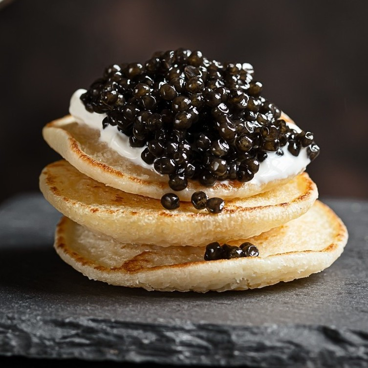
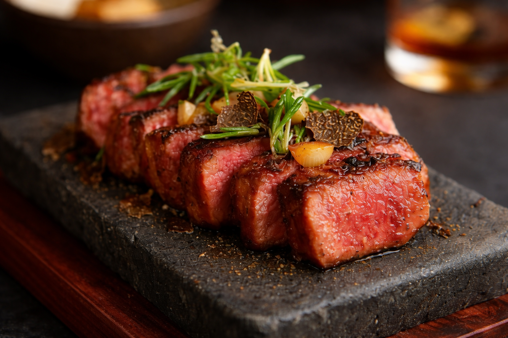
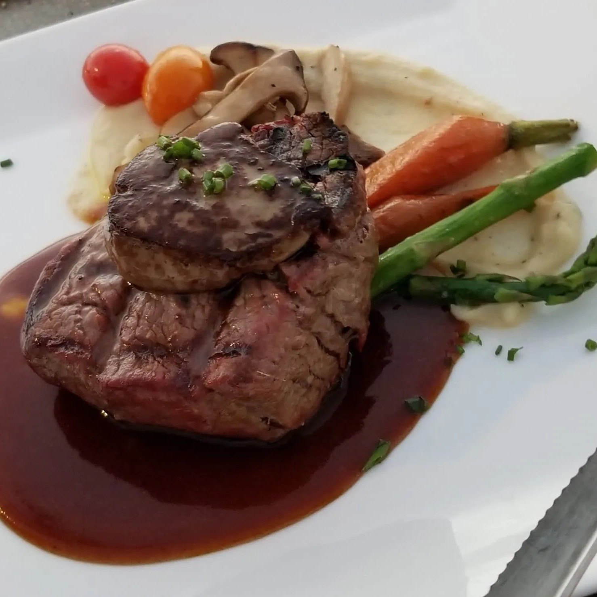
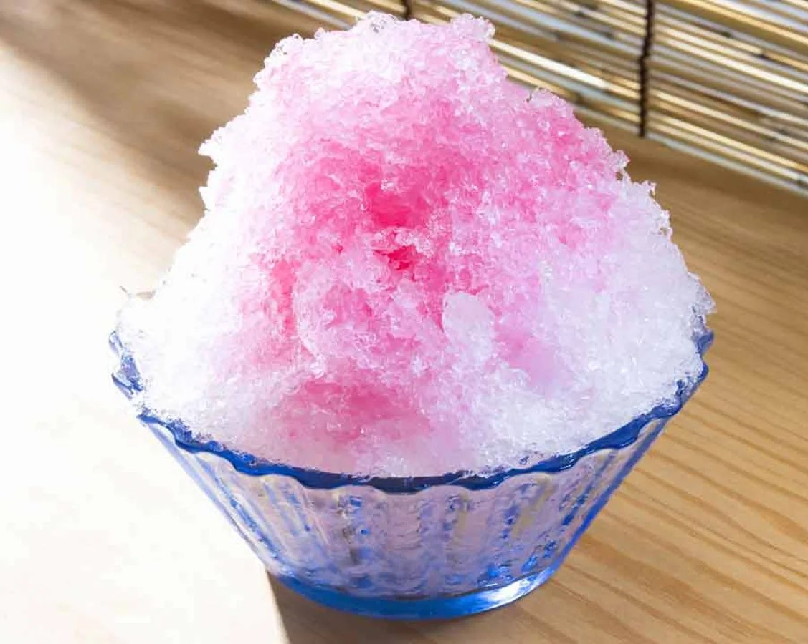

Una experiencia gastronómica con sello propio
Gastronomia de alta calidad. Una experiencia culinaria única en el GRAN CASINO ASIR.
Contamos con productos excepcionales, presentaciones que cautivan y sabores que despiertan todos los sentidos.
Convirtiendo la experiencia en única e inolvidable.
Culinary Prelude

Caviar Imperial Étoile
Un tesoro de los mares más selectos. El pináculo del lujo gastronómico.
Donde cada bocado transforma y despierrta todos los sentidos, convirtiendolo en una experiencia sublime.
Una declaracion de exclusividad y sofisticación, ideal para quienes buscan la perfección y emociones intensas.
Tartar de Wagyu
Una joya en la alta Gastronomia
Wagyu de primera calidad, que garantiza un sabor intensamente marmoleado que se derrite al contacto con el
paladar
Cuiando llega a la mesa no solo es un entrante, es una declaracion de lujo, una experiencia creada para
quienes
entienden que la verdad exclusividad no se explica, sino que se siente.
Culinary Masterpiece

Wagyu Imperial A5
El máximo simbolo del lujo gastronómico. Un privilegio reservado a unos pocos.
Su textura increiblemente suave, convierte cada bocado en un momento irrepetible, una experiencia que trasciende
lo gastronómico y celebra el verdadero significado de la exclusividad.
Medallón de Solomillo de ternera
El pecado que vale cada apuesta
Seleccion exclusiva de solomillo de ternera de vaca madurada, sellado a la perfección y en su punto ideal para
alcanzar una textura mantecosa y jugosa inigualable.

Arte Dulce
MOUSSE CHOCOLATE
Una obra de arte hecha dulce.
Un postre creado para la gente que le gusta el orden, formado por capas perfectamente definidas, un postre de
apariencia delicada, casi fragil, que merece ser disfrutado sin prisa.
KAKIGORI
El frio traido desde japón
Imagina una montaña de hielo finamente raspado, tan ligero que parece una nube a punto de deshacerse en los
dedos.
Una delicias japonesa que puede venir en diferentes sabores para deleitar cualquier paladar.

Seleccion premium de cocteles
Sr Winston Cocktail
Un Cocktail que combina lo mejor de la tradición con un toque de elegancia moderna.
Una fusion de gin,vermouth y un toque de bitter, logrando el perfecto equilibro entre lo dulce y amargo.
Time in Your Lips
Una joya líquida reservada a los más exclusivos paladares, aquellos que entienden que el verdadero lujo no solo
se mide en precios, sino en la intensidad de un instante que no todos pueden experimentar.
No solo es un coctel, es un elixir que combina un Tequila Gran Patrón Burdeos, Louis Roederer Cristal Rosé y Oro
lóquido comestible de 25 quilates